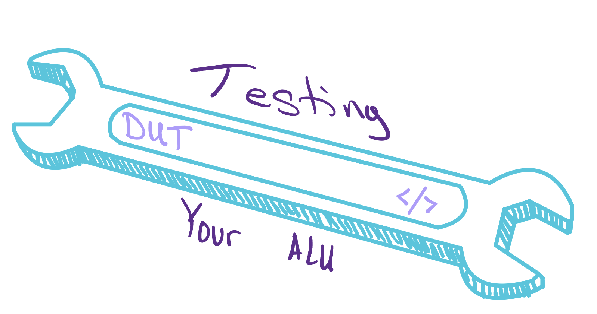
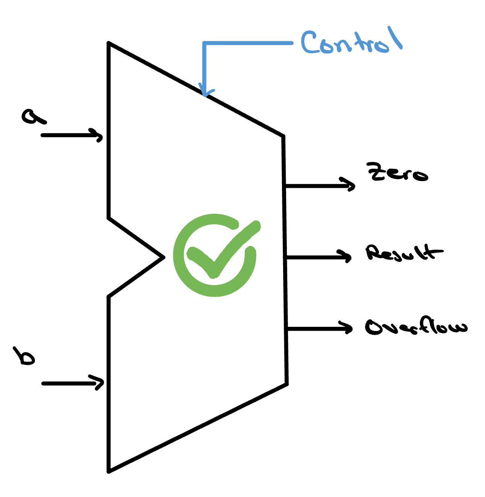

Testing Your ALU
Our 32-bit ALU is complete — but a design isn't finished until it's been tested. We'll write a testbench: a block of Verilog that instantiates our ALU as the design under test and drives it with carefully chosen stimulus. By checking each operation's output against what we expect, we prove the design is correct before it ever becomes silicon.

What Is a Testbench?

So we just finished up our 32-bit ALU. It looks right
on paper — but how will we actually know it's fully
functional and bug-free? We could check a handful of cases by hand, but
between all 32 bits of inputs a and b and the
control code, we'd have to work through billions upon billions of
possible input combinations before we could call our ALU
bulletproof. So what should we do instead?
One of the most crucial steps in the semiconductor design process is design verification. During this stage, a design's functional correctness is thoroughly tested — not by hand, but in simulation. Once we've developed a deep understanding of what our design is supposed to do, we can build a testbench to thoroughly exercise it and verify its behavior. You can picture a testbench as a wrapper that surrounds a module and aids with stimulus and automated checking.
Testbenches come in all different shapes and sizes. You could have one written in Python that drives the design through a framework like cocotb, one in C that links against a compiled model of the hardware, or even one in Verilog that lives in the very same language as the design itself. Although each is slightly different, they all consist of one fundamental component: the Design Under Test, or DUT.
The Design Under Test
In our case, the DUT is the 32-bit ALU we just built. The inputs and
outputs of our design act as the
interface between the testbench and the DUT. Our inputs,
a, b, and control, are given to
the DUT from the testbench, and our outputs,
result, ovf, and zero, are given
to the testbench from the DUT. This will become a
little clearer once we actually wire the testbench to our ALU.
Before we wire anything up, though, there are a couple of useful
pieces of Verilog you should know. In Verilog, every signal is one of
two fundamental data types: a wire or a
reg. A wire is a net — a
connection that is always being driven by something, whether that's a
0, a 1, or a high-impedance z
(a floating, undriven state). A reg, on the other hand,
behaves more like a storage container: it holds whatever value it was
last assigned until something assigns it a new one.
When we connect our ALU to the testbench, we have to declare each
signal with the correct data type, and the rule comes down to
who drives the signal. Let's start with the inputs. In our
testbench, we want to try many different inputs and compare the
outputs our ALU gives us against what we expect — which means we
need to set and change a, b, and
control ourselves, from inside a
procedural block. Only a reg can be assigned that way, so
our inputs are declared reg. Our outputs, on the other
hand, are continuously driven by the ALU depending on whatever input
we hand it — we only ever observe them, never assign them. That's
exactly what a wire is for, so result,
ovf, and zero are declared wire.
With the signals declared, we can now instantiate our
ALU, which is essentially creating a copy of it that we'll actually
work with. For obvious reasons, it's typical to name that copy
something like dut, and we connect each of its ports to
our signals. If you look at the code on GitHub, you'll notice our ALU
has a variable called N floating around it. N
is a parameter that the user passes in to tell the ALU how large it
should be — that is, how many bits wide its operands are. In our
instantiation, we pin that down to a 32-bit ALU with the code
#(.N(32)). And with that, we're finally ready to start
applying some stimulus.
Stimulus and the Golden Model

With our ALU wired into the testbench, we can finally start feeding it
inputs and watching what comes back out. In the testbench used in this
project, we set up a separate task called
run_one whose whole job is to push a single input
combination through the ALU and see what it produces. A task, in
Verilog, is really just a reusable block of code — think of it
like a function in an ordinary programming language — that we can
call again and again with different arguments, so we don't have to
rewrite the same handful of steps for every test we want to run. Each
time we call it, run_one routes its given inputs to the
matching ports on our dut. Our dut then does
some thinking and spits out values for result,
ovf, and zero.
case (ctrl)
CTRL_AND: exp_result = av & bv;
CTRL_OR: exp_result = av | bv;
CTRL_ADD: exp_result = av + bv;
CTRL_SUB: exp_result = av - bv;
CTRL_SLT: exp_result = (sav < sbv) ? 32'd1 : 32'd0;
CTRL_NOR: exp_result = ~(av | bv);
CTRL_NAND: exp_result = ~(av & bv);
endcaseNow for the real question, and it's the same one we ran into all the way back at the start: once we have an output, how do we actually know it's correct? We're certainly not going to sit there and check billions of results by hand. Instead, we get the testbench to work out the expected answer entirely on its own — and this independent, known-good reference is what we call the golden model (you'll also hear it called an oracle). For every input we hand the ALU, the golden model figures out what the answer should be, and then we simply compare the two. In the case of an ALU, the golden model doesn't have to work too hard: it can re-derive every result from just a few plain Verilog operators.
After we get two results — one from the DUT and one from the golden model — we compare them. If the results match, our ALU is working correctly for that input combination; if they're different, we increment the error count and print a short description of which test failed. In either case, we keep moving through all of our tests. But with billions of possible input combinations, how do we know which ones to actually test?
Choosing Good Tests and
Reading Waveforms
Since we still can't choose every input to test, we make sure to test the ones most likely to break something. That's the whole idea behind coverage: instead of throwing billions of random inputs at our ALU and hoping for the best, we hand-pick a small, curated set of test vectors that each probe a specific corner of the design — the awkward boundaries where bugs love to hide.
The nice thing is that most of those corners are the same from one ALU to the next. A handful of classic edge cases — overflow boundaries, zero results, sign flips, and carries that ripple the whole way across — catch the overwhelming majority of arithmetic and logic bugs. A few sharp vectors like these find far more problems than thousands of random ones ever would.
Sharp vectors tell us that something failed, but not always where. To watch a failure unfold signal by signal, the testbench records a VCD file. A VCD file, or value change dump, is a complete history of every signal's value across the whole run. You can open a file like this in a waveform viewer, and instead of painstakingly tracking outputs in raw hexadecimal, you can watch the bits change over time, making the exact moment things go wrong far easier to find.
![A waveform viewer showing the ALU testbench running over roughly thirteen nanoseconds. The left panel lists the signals — Time, control[3:0], Ainvert, Bnegate, a[31:0], b[31:0], result[31:0], ovf, zero, and set — and the right panel plots each one across time. The green control bus steps through op codes (0000, 0001, 1100, 1101, 0010, 0110, 0111); the red a, b, and result buses show 32-bit hex operands and outputs changing at each step; and the orange ovf, zero, and set flags toggle high and low as each test vector is applied.](../../assets/ALU/waveform.jpg)
And when the run ends with RESULT: PASS, it means
something concrete: on every vector we tried, our ALU agreed with an
independent model of what it should do. That's real evidence
the design is correct — not a hunch.
Check Yourself
Your testbench runs the four curated edge-case vectors and prints RESULT: PASS. A teammate concludes that the ALU is now proven correct for every possible input. Are they right?
